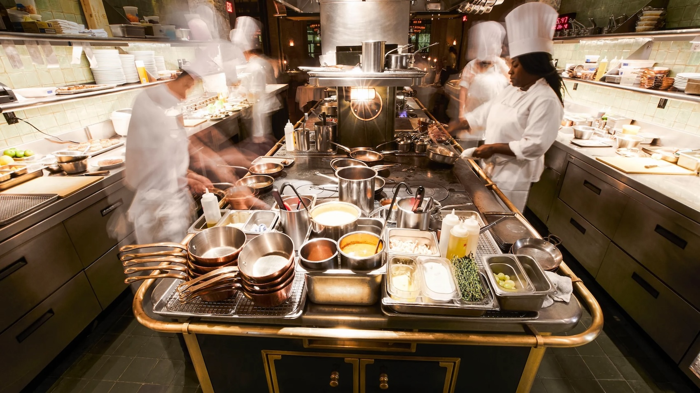

Click here to reserve a table
Welcome to Off the Pike! One of the most unique activities that ACC students participate in is Off the Pike, where students in the Culinary program run a food truck and pop-up restaurant. The students gain hands-on authentic food service and hospitality industry experience while also fundraising for the program. Typically these events make anywhere from $1000 to $1500 depending on the turn-out which is used to fund the program and everything they do.
Click here to reserve a table